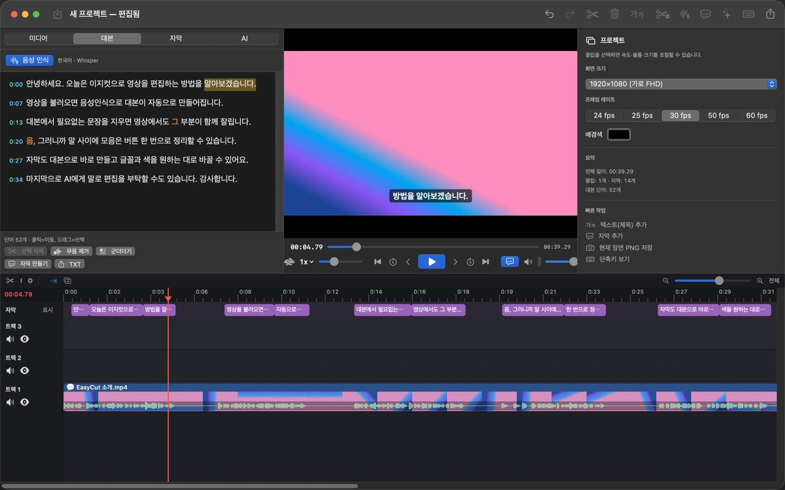
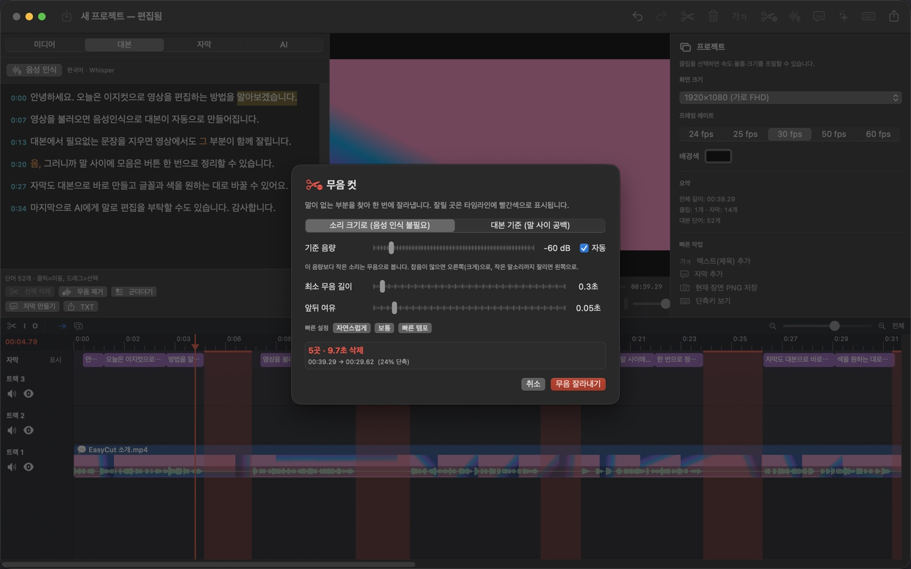
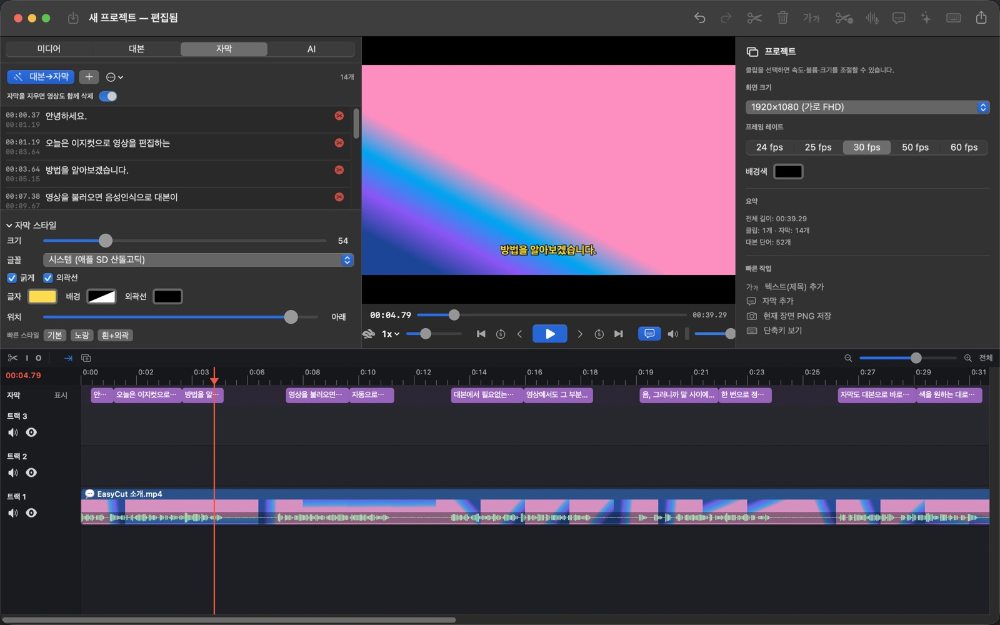
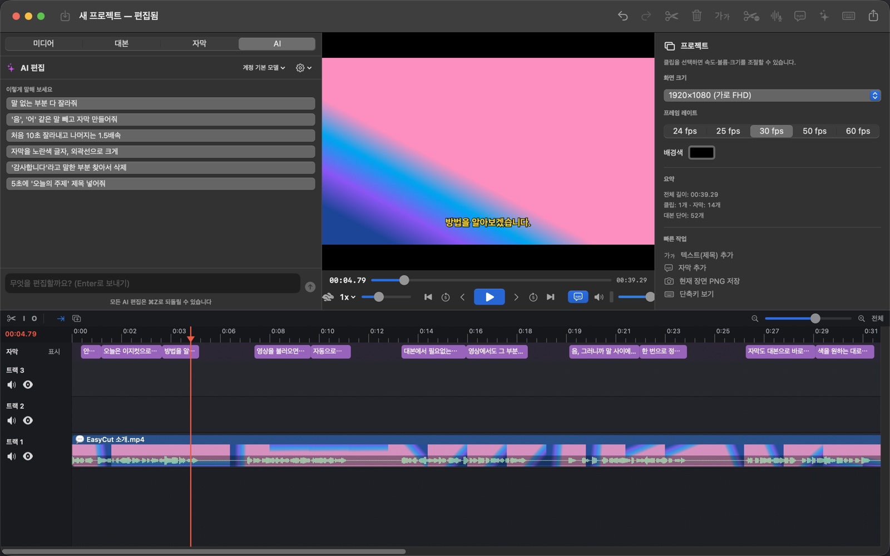

말을 지우면
영상이 음 잘립니다.
EasyCut은 영상을 대본으로 편집하는 프로그램입니다. 음성 인식으로 대본을 만들고, 필요 없는 말을 지우면 그 부분이 영상에서 빠집니다. 무음 컷, 자막, 화면 녹화, AI 편집까지 한 앱에 있습니다.
회원가입 없이 바로 씁니다. 음성 인식(Whisper)과 변환 도구(ffmpeg)가 앱 안에 들어 있습니다.
노란 말은 '음', '어' 같은 군더더기, 점선 칸은 말이 없는 구간입니다. 실제 앱에서는 ⌫ 하나로 지웁니다.




타임라인처럼 정리한 기능
트랙 색은 앱 안의 클립 색과 같습니다. 파란색은 영상, 초록색은 소리, 보라색은 자막입니다.
대본으로 편집
대본에서 말을 골라 ⌫를 누르면 그 말이 영상에서 잘리고 뒤가 당겨집니다.
원클릭 무음 컷
음성 인식 없이 소리 크기만으로 말 없는 구간을 찾아 한 번에 지웁니다.
최대 20배속
미리보기는 0.25~20배속, 클립 속도는 0.1~20배까지 음정을 유지한 채 바꿉니다.
음성 인식
Whisper가 앱 안에 들어 있어 인터넷 없이 한국어·영어 등 7개 언어를 받아씁니다.
군더더기 제거
'음', '어', '그' 같은 말을 대본에서 찾아 한꺼번에 지웁니다.
화면·얼굴 녹화
화면, 카메라, 마이크, 컴퓨터 소리를 함께 녹화하고 끝나면 트랙에 나눠 배치합니다.
자동 자막
대본으로 자막을 만들고, SRT로 가져오거나 내보내고, 영상에 입힙니다.
자막으로 컷 편집
자막 한 줄을 지우면 그 구간 영상도 지워지고, 순서를 바꾸면 영상도 따라 움직입니다.
자막 시간 맞추기
자막마다 실제 말이 시작되는 순간을 소리로 재서 빠르거나 늦은 자막을 맞춥니다.
개인정보 가리기
화면 글자를 읽어 전화번호·주민번호·이메일이 보이는 자리와 시간만 흐리게 가립니다.
화면 배치
화면 속 화면, 원 모양 얼굴 카메라, 인물 배경 흐리기, 마우스 클릭 강조를 넣습니다.
내보내기
MP4(H.264·HEVC), ProRes, 소리만(M4A), 4K부터 480p까지, 장면 PNG 저장.
말로 시키는 편집
Claude나 ChatGPT 구독 계정으로 버튼 하나만 누르면 로그인됩니다. AI가 앱의 편집 도구를 직접 써서 타임라인을 고치고, 모든 편집은 ⌘Z로 되돌릴 수 있습니다.
길이 12:48.20 → 10:31.05
길이 10:31.05 → 09:31.05
잘린 말 되살리기 원본 84.20~84.61초 "그래서"
자막 시간 맞추기 한꺼번에 0.18초 늦춤
Claude Code, Claude 데스크톱, Codex에서도 EasyCut을 바로 조작할 수 있습니다(MCP). 위 대화는 기능을 보여 주기 위한 예시입니다.
설치
둘 다 무료이고 소스가 공개되어 있습니다(MIT). 새 버전이 나오면 앱이 알려 주고 바로 업데이트합니다.
Mac
1.11.0 · M1 이상 Apple Silicon · macOS 14 이상- EasyCut-1.11.0.dmg를 열고 EasyCut을 응용 프로그램 폴더로 끌어 놓습니다.
- 처음 열 때 경고가 뜨면 시스템 설정 › 개인정보 보호 및 보안에서 [그래도 열기]를 누릅니다.
- 대본 탭에서 [Whisper 켜기]를 누르면 음성 인식 모델(574MB)을 한 번 받습니다.
Windows
0.5.0 · Windows 10/11 64비트- EasyCut_0.5.0_x64-setup.exe를 받아 실행합니다.
- SmartScreen 경고가 뜨면 [추가 정보] › [실행]을 누릅니다.
- 한국어 화면 글자 인식(개인정보 가리기)은 Windows에 한국어 언어가 설치되어 있어야 합니다.